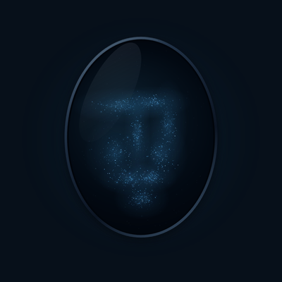

Current focus · simulated

Orchard
In progress · Briar can continue
Other work remains reachable
Static accepted design frames, not a new motion study. Lights are always paired with names and words.
Named work
Fixed order, not urgency sorting. Select to inspect; current focus stays put.
Inspecting · simulated
Beacon
- What needs attention
- What happens next
- Who acts next
- Information freshness
Acknowledgement is not resolution. This demo never clears a concern, starts work or sends a message. No data is stored or transmitted.